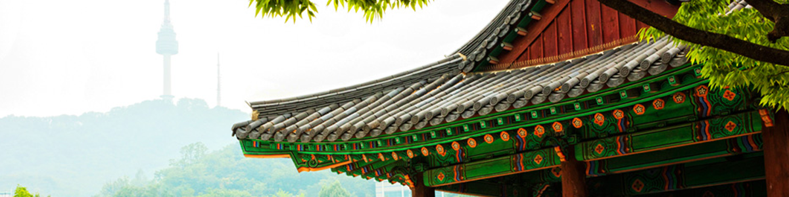
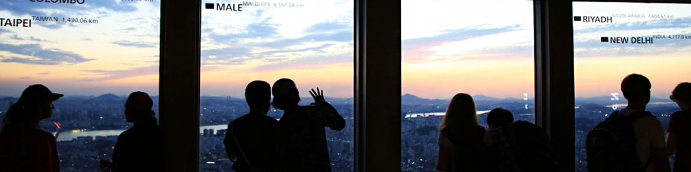
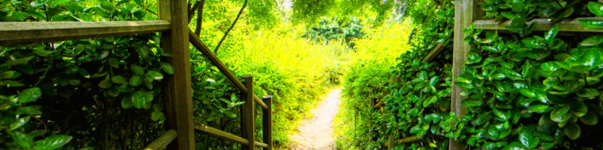
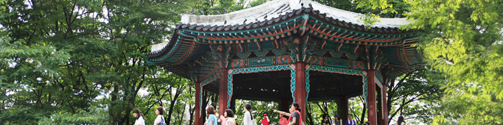
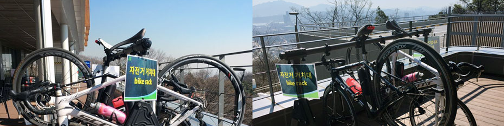
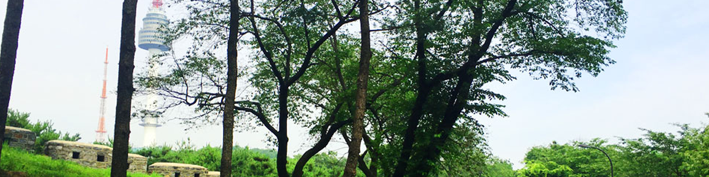
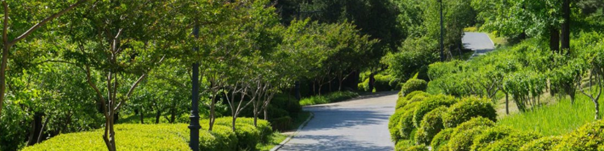

투어가이드
남산공원에서 시작하는 기분 좋은 산책
남산공원 입구에서부터 시작하여 국립극장까지 이어지는 북측 순환로는 경사가 완만하고 찬찬히 걷기 좋은 코스로 구성되어 있습니다.
온 가족이 함께 기분 좋은 산책을 떠나 보세요.
남산골 한옥마을에서 전통문화를 체험해 보세요
남산 공원길을 따라 걷다 보면 전래동화에서나 볼 듯한 아름다운 한옥마을을 만나실 수 있습니다. 민속자료 속 한옥 다섯 채를 이전 및 복원하여 구성된 이곳, 남산골 한옥마을에서 우리 선조들의 삶을 직접 체험해 보세요.
남생생한 OLED 미디어 체험
서울타워 플라자 1층 OLED 터널과, 2층의 OLED 서클, 4층 천장에 설치된 OLED 웨이브 등 다양한 미디어 전시물들을 감상해 보세요.
단청, 불꽃놀이 등 한국적 아름다움을 표현한 최첨단 미디어 아트를 즐기실 수 있습니다.
온 가족이 즐거운 한식밥상
온 가족이 건강하고 맛있게 즐기는 든든한 한 끼 식사, 계절밥상에서 만나보세요.
계절밥상 테라스 너머로 보이는 아름다운 서울의 야경은 덤!
설렘을 가득 실은 케이블카
우리나라 최초의 케이블카, 남산 케이블카는 연인들의 데이트 코스로 유명합니다. 하늘을 가르며 케이블카를 타고, 남산의 풍경과 서울의 전망을
한눈에 즐겨보세요.
사랑과 추억의 순간을 부착해 보세요!
남산서울타워에 여러분의 사랑을 남겨보세요. 남산서울타워 1층, 2층, 4층에 위치한 ‘사랑의 서약’ 포토부스에서 사진을 찍고,
남산서울타워 벽면에 추억을 남길 수 있답니다.연인, 가족, 친구끼리 사진을 찍어 사랑과 추억의 메시지를 타워에 남겨주세요.
오래도록 변치 않을 사랑을 약속해 보세요!
서울을 한 눈에 담을 수 있는 곳!
서울을 한 눈에 담을 수 있는 곳! 남산서울타워 전망대에서 서울의 경관을 감상하세요. 남산에서 가장 높은 곳인 남산서울타워 전망대에서는 360도 스카이뷰로 아름다운 서울의 야경을 감상하실 수 있습니다.또 365일 내내 누구나 자유롭게 서울의 전경과 야경을 내려다 볼 수 있는 1~4F층 테라스도 또 하나의 멋진 볼거리입니다.까만 밤을 화려하게 수놓은 야경을 바라보며 사랑을 고백해 보세요!
회전 레스토랑에서 즐기는 이색데이트
남산서울타워 꼭대기에 위치한 360도 회전식 레스토랑, 엔그릴에서 근사한 야경과 함께 로맨틱한 식사를 즐겨 보세요.
100% 예약제로 운영되고 있어 사전 예약은 필수!
좋은 책, 기분 좋은 시작
이런저런 고민들로 머리가 복잡할 때, 도서관으로 먼저 떠나보는 것은 어떨까요? 90여 년의 역사를 지닌 남산도서관은 방대한 소장 자료를 보유하고 있을 뿐 아니라 각종 전시회, 강연회 등이 상시 운영되고 있어 다양한 문화체험을 즐기기에 제격입니다.
마음을 채워줄 책 한 권을 빌려 남산으로 향해 보세요.
사랑과 추억의 순간을 부착해 보세요!
남산도서관과 소월시비를 지나, 남산공원길(남측 순환로)를 따라 걸어 올라오세요. 공원길 우측에 자리한 고요한 숲길, ‘사색의 공간’을 천천히 걷다 보면 따뜻한 햇살과 바람소리가 마음을 편하게 합니다. 북적이는 도시에서 느낄 수 없었던 작은 여유를 즐겨 보세요.
서울 전경을 한 눈에, 남산 팔각정
남산 팔각정에서 바람을 맞으며 잠시 쉬어가세요. 남산 꼭대기에서 바라본 서울의 드넓은 전경은 답답했던 마음까지 시원하게 만들기에 충분합니다.
여유롭게 즐기는 커피 한 잔
스타벅스 남산서울타워점에서 커피 한 잔과 여유로운 휴식을 만끽해 보세요. 가방 속에 챙겨온 책 한 권에 빠져 시간을 보내기도 하고,
테라스에서 바라본 풍경에 잠시 넋을 놓기도 하며 잠깐의 여유로움을 즐겨보시는 것이 어떨까요?
국립극장에서 시작하는 업힐 라이딩 & 트레킹 코스
스포츠 마니아라면 남산 라이딩 & 트레킹 코스에 도전해 보세요! 남산 국립극장(옛 해오름극장) 옆 매표소부터 남산서울타워까지 약 1.8km 정도 이어지는 업힐 코스는 레저 마니아들에게 유명합니다. 오르막이 많으니 페이스를 조절하며 올라와 주세요.
남산서울타워에서 맞는 꿀맛 휴식
라이딩 & 트레킹 코스를 따라 오르다 보면 어느새 정상인 남산서울타워에 도착하게 됩니다. 남산서울타워 광장에서 시원한 바람을 맞으며 잠시 쉬어가세요. 운동 후 허기를 달래줄 다양한 먹거리가 준비되어 있답니다. ※ 자전거는 1층 광장에 자전거 전용 거치대가 준비되어 있으니 이용하시길 바랍니다.
남산도서관까지 이어지는 다운힐 & 트레킹 코스
상쾌한 바람을 가르며 남측순환로를 따라 멋진 경관의 다운힐 & 트레킹 코스를 즐겨 보세요. 단, 남측순환로 내리막 코스는 다소 경사가 있는 편이므로 속도를 낮추어 즐겨 주세요. ※ 오르막, 내리막 순환로 코스 모두 버스 차로와 붙어 있기 때문에 안전에 각별히 주의해 주세요!
